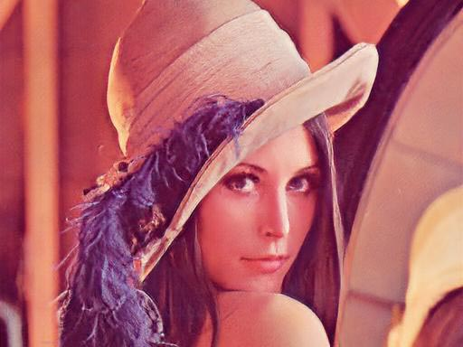

Computer Vision Laboratory, ETH Zurich
Switzerland, 2018
AI Goes Mobile
< Perceptual Image Enhancement on Smartphones >
In conjunction with ECCV 2018 — PIRM 2018 — September 14, Munich, Germany
More layers, more filters, deeper architectures...
Sounds like a standard receipt for achieving top results in various AI competitions, isn't it? Deep ResNets and VGGs, Pix2pix-style CNNs of size half a gigabyte... But should we always need a cluster of GPUs to process even small HD-resolution images? How about light, fast and efficient intelligent solutions? Maybe it's time to come up with something more sophisticated that can run on our everyday hardware?
This challenge is aimed exactly at the above problem, thus all provided solutions will be tested on smartphones to ensure their efficiency. In this competition, we are targeting two conventional Computer Vision tasks: Image Super-resolution and Image Enhancement, that are tightly bound to these devices. While there exists lots of works and papers that are dealing with these problems, they are generally proposing the algorithms which runtime and computational requirements are enormous even for high-end desktops, not to mention mobile phones. Therefore, here we are using a different metric - instead of assessing solution's performance solely based on PSNR/SSIM scores, in this challenge the general rule is to maximize its accuracy per runtime while meeting some additional requirements. More information about the tasks and the validation process is provided below.
TIMELINE
| 9th May: | > Training and validation data released |
| 17th May: | Validation phase starts |
| 18th July: | Test phase starts |
| 25th July: | Final results submission deadline |
| 29th July: | Poster submission deadline |
| 1st August: | Challenge results released |
| 22nd August: | Paper submission deadline |
| 5th September: | Notification of accepted papers |
| 14th September: | PIRM 2018 Workshop |
TASKS
| Track A: Image Super-Resolution | Track B: Image Enhancement |
|---|---|
 Bicubic
Bicubic

Modified
|
 Original
Original
 Modified
Modified
|
| In this challenge, we consider a conventional Super-Resolution problem, where the goal is to reconstruct the original image based on its downscaled version. To make the task more practical, we consider 4x downscaling factor, sample results for which obtained by SRGAN network are shown above. | Original Image Enhancement problem introduced by DPED paper, where the goal is to map photos from a particular smartphone to the same photos obtained from a DSLR camera. Here we consider only a subtask of improving images from a very low-quality iPhone 3GS device. |
| Dataset for training: DIV2K (training part) | Dataset for training: DPED (training part), iPhone 3GS |
| Dataset for validation: DIV2K (validation part) | Dataset for validation: DPED (test part), included above |
Don't know how to start → start with this code that already satisfies all requirements but is quite slow, and try to optimize it!
Hint: you can try to play with a number of layers, number and size of filters, or just simply try out other CNN architectures...
VALIDATION
Read carefully before starting the development! — The following requirements apply for both tasks:
| Delivered model: | Tensorflow, saved as .pb graph |
| Max. model size: | 100MB |
| Target Image Resolution: | 1280 x 720px |
| Possible Image Resolutions: | Any arbitrary size |
| Max. RAM consumption (inference, 1280x 720 px image): | 3.5GB |
A code describing how to convert your Tensorflow model into an appropriate .pb file will be available soon.
Rephrasing the above requirements: your solution should be based on Tensorflow Machine Learning framework, and after saving your pre-trained model should not exceed 100MB. Yours solution should be capable of processing images of arbitrary size, and for our target images of resolution 1280x720px it should require no more than 3.5GB of RAM. Note that both SRCNN, DPED and SRGAN networks already satisfy all these requirements!
During the validation period, the performance of your solution will be assessed based on two metrics: its speed compared to a baseline SRCNN network and its PSNR accuracy compared to SRGAN or DPED networks:

Since PSNR/SSIM scores do not always objectively reflect image quality, during the test phase we will conduct a user study where all your final submissions will be evaluated by a large number of randomly selected people, and the resulting MOS Scores will replace PSNR scores in the above formula.
ORGANIZERS
 |
Computer Vision Lab ETH Zurich, Switzerland andrey@vision.ee.ethz.ch |
 |
Computer Vision Lab ETH Zurich, Switzerland timofter@vision.ee.ethz.ch |
Computer Vision Laboratory, ETH Zurich
Switzerland, 2018